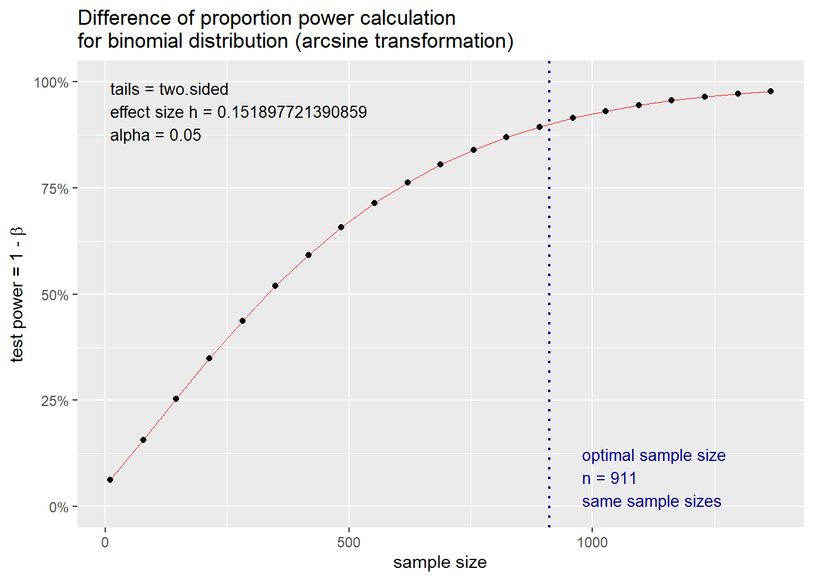
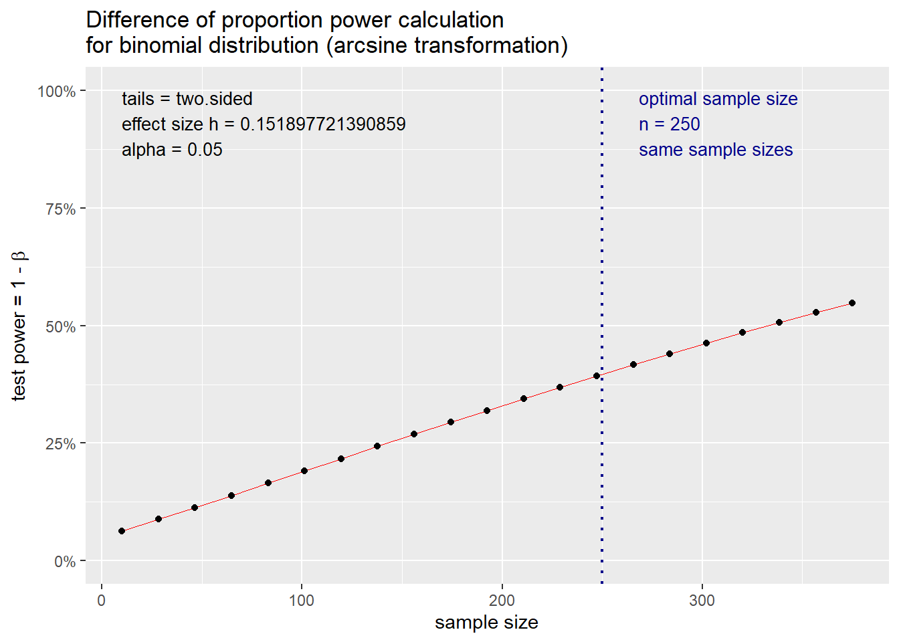

Sample Size Determination in Epidemiological Studies
Author
Collins Audi
Published
October 28, 2025
As part of my sample-size exploration, I turned to a situation involving a continuous outcome: systolic blood pressure (SBP). I wanted to compare mean SBP between two populations, so I needed to translate that study idea into the statistical quantities R would require.
I had some early information from a pilot study to guide me. The group with the lower blood pressure seemed to have a mean SBP of 120 mm Hg, and both groups appeared to share a standard deviation of 15 mm Hg. For the purpose of designing the study, I decided that the smallest difference I cared about detecting was 5 mm Hg. I also aimed for 90% power with a 5% significance level.
My next step was to break these inputs into the components needed for a two-sample t-test power calculation. In R, that means identifying:
delta (δ): the expected difference between group means
sigma (σ): the pooled standard deviation (which is simply 15 here, since both groups share the same SD)
Once I had δ and σ, I could compute the expected standardized effect size, Cohen’s d, which is defined as: d = δ/σ
I based δ and σ on the pilot-study observations, though in practice these can come from previous research as well. With Cohen’s d calculated, I would then be able to use pwr.t.test() in R to estimate how many participants each group would need to detect that 5 mm Hg difference with the power and significance level I had chosen.
library(pwr)
Warning: package 'pwr' was built under R version 4.4.3
#Cohens d (Effect size = delta/sigma) and calculating sample size n, (sample size for each group)d =5/15d
Two-sample t test power calculation
n = 190
d = 0.3333333
sig.level = 0.05
power = 0.8998509
alternative = two.sided
NOTE: n is number in *each* group
Question: Using the same study outlined above, how much power would we have ended up with in our study if we only managed to recruit 150 participants in each group, but the variance of our study sample was smaller than what we anticipated (so SD=12)? My answer:
#The effect size would be:d2 =5/12power3 =pwr.t.test(d=d2, n=150, sig.level =0.05)power3
Two-sample t test power calculation
n = 150
d = 0.4166667
sig.level = 0.05
power = 0.9491662
alternative = two.sided
NOTE: n is number in *each* group
I also estimated the sample size needed to compare the proportion of people who smoke in two populations. From previous work, I thought that 10% of the people in population A smoke, and that an absolute increase of 5% in population B (compared to population A) would be clinically significant. I wanted 90% power, and a 5% significance level. In this scenario I used the ‘pwr.2p.test’ command in the power package.
Difference of proportion power calculation for binomial distribution (arcsine transformation)
h = 0.1518977
n = 910.8011
sig.level = 0.05
power = 0.9
alternative = two.sided
NOTE: same sample sizes
plot(power4)

QUestion: If the total sample is 500 (n per group =250), power would be calculated as follows:
Difference of proportion power calculation for binomial distribution (arcsine transformation)
h = 0.1518977
n = 250
sig.level = 0.05
power = 0.396905
alternative = two.sided
NOTE: same sample sizes
plot(power5)

In a parallel RCT, 25% of the subjects on the standard therapy had a successful outcome. It is only of clinical relevance if a 40% absolute improvement is observed in the new therapy. How many subjects are required in order to detect this difference with 80% power at the 5% level of significance? In this case I assessed the difference in proportions again, this time with an effect size that has a 0.40 difference between the groups:
Difference of proportion power calculation for binomial distribution (arcsine transformation)
h = 0.8282914
n = 22.88076
sig.level = 0.05
power = 0.8
alternative = two.sided
NOTE: same sample sizes
In the same parallel trial as described in the example above, we still observe that 25% of the subjects on the standard therapy had a successful outcome, but this time it is only of clinical relevance if a 40% relative improvement is observed in the new therapy. How many subjects are required in order to detect this difference with 80% power at the 5% level of significance? First we need to work out what a 40% relative increase on 25% is: 0.25*1.40=35% of subjects would need to have a successful outcome for there to be clinical relevance.
Difference of proportion power calculation for binomial distribution (arcsine transformation)
h = 0.2189061
n = 327.5826
sig.level = 0.05
power = 0.8
alternative = two.sided
NOTE: same sample sizes
For this part of my analysis, I turned my attention to a planned cross-sectional study aimed at estimating the current point prevalence of obesity in a population. A survey conducted five years earlier reported that 30% of adults were obese, but policymakers now suspect that the prevalence has increased to 40%.
My goal was to estimate how large a sample would be needed to detect this change with 80% power, treating the previously observed 30% as the null hypothesis prevalence.
Because this is a single-proportion problem—comparing an expected prevalence against a baseline—the appropriate tool in R is the function pwr.p.test() from the pwr package.
Framing the Statistical Question
The essential setup is:
- Null hypothesis prevalence (p1): 0.30
- Expected current prevalence (p2): 0.40
- Effect size: difference between the two proportions
Desired power: 0.80
The task is to estimate the required sample size to detect this 10-percentage-point increase.
proportion power calculation for binomial distribution (arcsine transformation)
h = 0.2101589
n = 177.7096
sig.level = 0.05
power = 0.8
alternative = two.sided
For my next analysis, I set out to explore how sample-size requirements change when designing a case–control study of tubal ligation and ovarian cancer. To anchor the work in real data, I drew on estimates reported in Tubal ligation, hysterectomy and epithelial ovarian cancer in the New England Case-Control Study (Rice et al., 2013, IJ Cancer).
From this paper, I extracted the key parameters needed for power and sample-size calculations:
- Proportion of controls with tubal ligation: 18.5%
- Proportion of cases with tubal ligation: 12.8%
- Odds ratio (tubal ligation → ovarian cancer): 0.82
Study size: 2,265 cases and 2,333 controls
Not all of these figures are required for the power calculations, but they provide a realistic starting point.
To understand how detectable effect sizes influence sample-size needs, I generated a plot showing total sample size as a function of the odds ratio, assuming:
Assuming 18% of controls had undergone tubal ligation (90% power, odds ratios ranging from 0.6 to 0.9)
This gave me a visual sense of how quickly required sample size grows as the true association gets closer to 1.0.
If we want to use a test of proportions to assess how large our sample needs to be for an expected odds ratio of the association between tubal ligation and ovarian cancer, you need to have two proportions for the command. Above we assume that 18% of controls have had tubal ligation, so we then can use this formula to work background from an expected odds ratio to see the other proportion:
Difference of proportion power calculation for binomial distribution (arcsine transformation)
h = 0.06092931
n = 5660.744
sig.level = 0.05
power = 0.9
alternative = two.sided
NOTE: same sample sizes